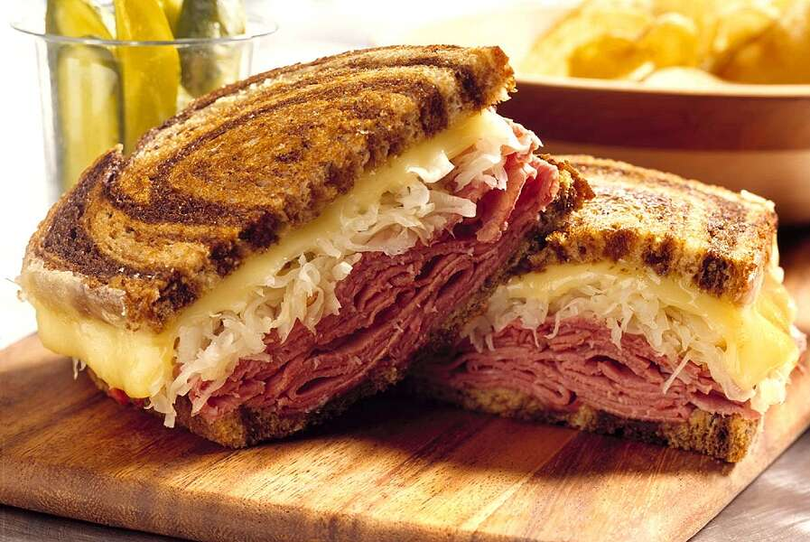

Reuben Sandwich II Recipe
By Colette G.

These sandwiches are really delicious and easy to make. They are one of my family's fix-it-quick favorites. I like to serve them with big bowls of steaming vegetable soup and dill pickles on the side. Enjoy!
Ingredients
4 Servings
- 2 tablespoons butter
- 8 slices rye bread
- 8 slices deli sliced corned beef
- 8 slices Swiss Cheese
- 1 cup sauerkraut, drained
- 1/2 cup Thousand Island Dressing
Steps
- Preheat a large skillet or griddle on medium heat.
- Lightly butter one side of bread slices. Spread non-buttered sides with Thousand Island Dressing. On 4 bread slices, layer 1 slice Swiss Cheese, 2 slices corned beef, 1/4 cup sauerkraut and second slice of Swiss Cheese. Top with remaining bread slices, buttered sides out.
- Grill sandwiches until both sides are golden brown, about 5 minutes per side. Serve hot.